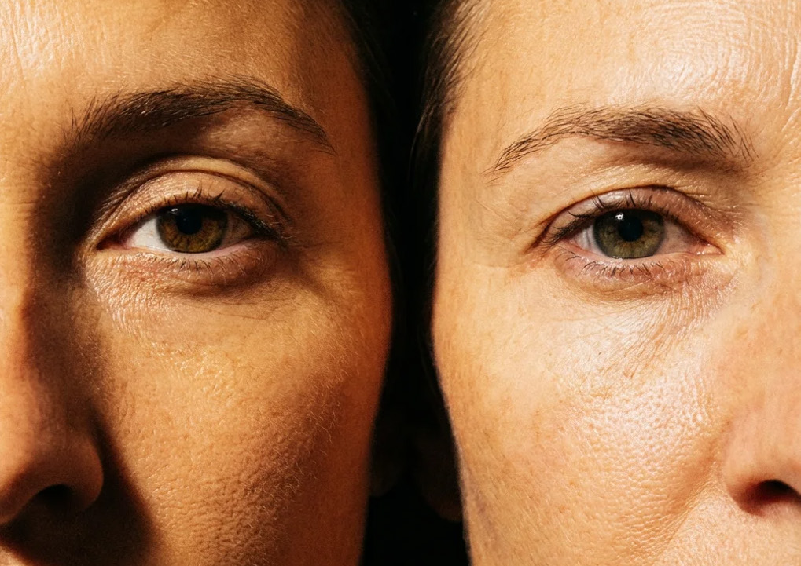
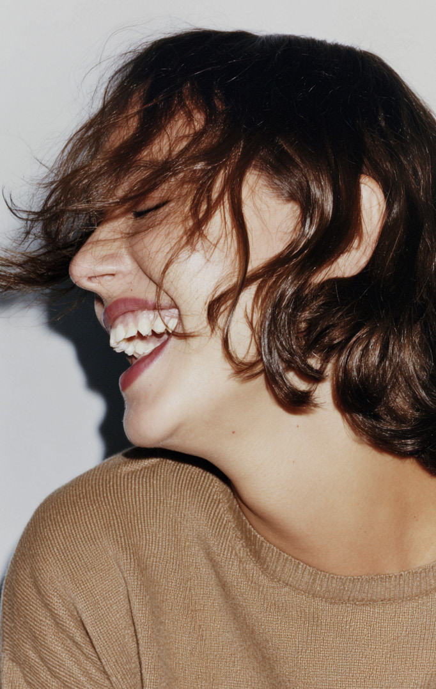

Alba
Muted
Powder
- C
- 10
- M
- 22
- Y
- 2
- K
- 0
Versie 1.0 — maart 2026
Opgemaakt door Stijn Anseel
stijn@stans.be

Science
that
moves
with you
Alba is Latijn voor dageraad — het eerste licht. De naam staat voor een nieuw begin, helderheid en kracht. Het plusteken verwijst naar ondersteuning, wetenschap en meer worden dan wie je al bent.
Wetenschap versus Warmte. Evidence-based maar niet koud of klinisch.
Alba+ is er voor vrouwen die niet willen vertragen. We geloven dat menopauze een transitie is, geen achteruitgang. Wij zijn het enige merk dat vrouwelijke hormonale fysiologie koppelt aan performance, omdat vrouwen ondersteuning verdienen die écht bij hun fysiologie past.

Producten en boodschappen vertrekken vanuit wetenschappelijke onderbouwing. Geen claims zonder bewijs.
Expliciete focus op vrouwelijke fysiologie en hormonale gezondheid. Niet als bijzaak maar als vertrekpunt.
Gericht op energie, herstel en duurzame vitaliteit. De vrouw als performer, niet als patiënt.
Houd rondom het logo een vrije zone aan van minimaal de negatieve ruimte uit het ‘plus’ teken.
Het logo niet disproportioneel uitrekken, roteren of van kleur veranderen. Geen effecten toevoegen. Niet op drukke achtergronden plaatsen zonder voldoende contrast.

Concentrische arcs: meerdere dunne halfronde lijnen die samen een opkomende zon suggereren. Haarfijn lijngewicht, clean en minimaal.


Voor
Marjolein
Hanna
Evelien
Marthe
Fien
Kirsten
Eva
The dawn has been sacred to almost every civilisation that ever looked up at the sky. Long before science could explain the mechanics of sunrise, human cultures across the world independently chose the moment of first light as a symbol of power, renewal and divine presence — the relief of darkness lifting, the return of warmth, the world made visible again.
Menopause is too often told as a story of loss. We see it as a passage. Like the hour before sunrise, it is a shift in rhythm that asks for attention, not resignation. The women we make Alba+ for are in the middle of their lives: working, training, raising, leading. They are not slowing down, and they should not have to.
Hormonal change touches energy, sleep, focus and recovery. Every Alba+ formula starts from that physiology: carefully chosen ingredients, meaningful doses and no claims we cannot back up. No miracle promises, no generic one-size-fits-all — just support that fits the female body as it changes, and the life she wants to keep living.
Mornings ask for energy and clarity, evenings for recovery and deep sleep. Our formulas follow the day as she actually lives it — the early run, the long meeting, the restless night — so support arrives when the body asks for it, and steps back when it doesn't.
In ancient Egypt, the scarab Khepri pushed the solar disc above the horizon each morning as an act of will. The dawn was not a given but a daily miracle. That is the resilience Alba+ stands for: not the dramatic kind, but the quiet, daily kind that simply keeps showing up.
Marjolein, Hanna, Evelien, Marthe, Fien, Kirsten, Eva — and every woman who rises with them. Active, confident and entirely herself.
Authentiek en ongestaged. Vrouwen in beweging, in het dagelijkse leven, op hun best, maar zonder perfectie. Geen stockfoto-esthetiek. Geen filters. Voorkeur voor natuurlijk licht, snapshot stijl. Geflitste schaduwen kunnen. Filmische kwaliteit. Leeftijd: 35–60 jaar. Actief, zelfverzekerd en steeds zonder pose.
Clean, top-down of driekwart perspectief. Natuurlijke materialen (steen, linnen, marmer) als achtergrond. Warme maar neutrale belichting.
Alledaagse momenten die ook wel eens scheef mogen zitten. Het gouden ochtendlicht kan, maar het tl-licht van de badkamer evengoed. Minimale architectuur, texturen en het leven zoals het is. En zij erin, volkomen zichzelf.



Alba
Muted
Powder
Alba
Salt
Water
Alba
Dawn
Light
Alba
Night
Watch
Science
that
moves
with
you
The dawn has been sacred to almost every civilisation that ever looked up at the sky. Long before science could explain the mechanics of sunrise, human cultures across the world independently chose the moment of first light as a symbol of power, renewal and divine presence.
The universality of this instinct speaks to something deep in our shared experience — the relief of darkness lifting, the return of warmth, the world made visible again. In ancient Egypt, the scarab beetle Khepri was the god of the rising sun, pushing the solar disc above the horizon each morning as an act of cosmic will.
The Egyptians saw the dawn not merely as a natural phenomenon but as a daily miracle — proof that the world had survived another night.
What connects all of these traditions is not coincidence but human truth. The dawn is the one moment in every day when the world resets. When whatever happened in the darkness is behind you, and what lies ahead is still open. It is the original symbol of resilience — not the dramatic kind, but the quiet, daily kind. The kind that simply keeps showing up.
Every morning they rise is a continuation of something ancient, universal and entirely their own.
Larken
Degular


Versiegeschiedenis